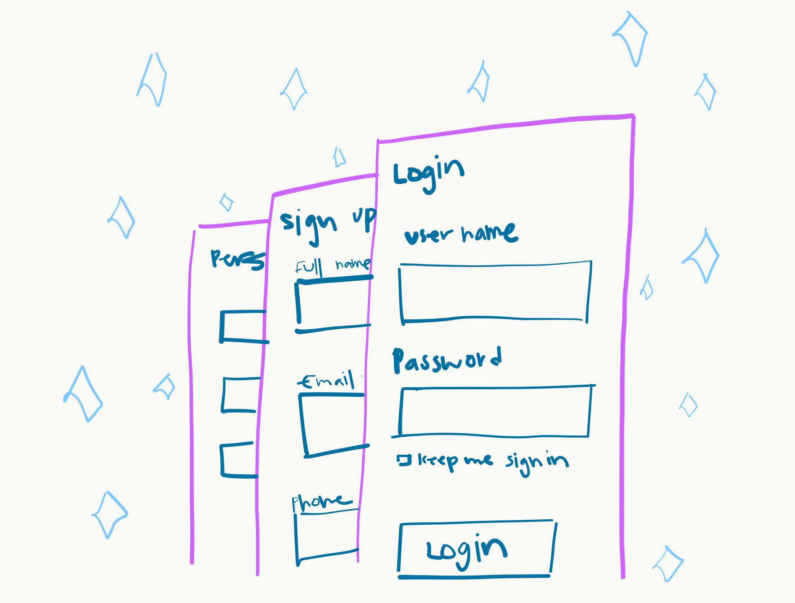

Best Practice for Modals & Overlay Reflection
By Limsokpich Sung, January 27th, 2021
What is a modal, overlay, or dialog window? A modal window is is an element that sits on top of an application’s main window. It creates a mode that disables the main window but keeps it visible with the modal window as a child window in front of it. Users must interact with the modal window before they can return to the parent application.
When do we want to use this UI design pattern for:
1. Grabbing the user's attention
2. Needing users input
3. Showing additional information
Breakdown of the Modal Window:
In every modal it is important to include an escape button for users to exit out of the overlay view. These could be a cancel button, "x" button, enabling the escape key or clicking out of the window.
The second thing is to include a descriptive title or tag at the top of the modal window. This informs users where they are at and what the purpose of the overlay window is. It also helps to let users know why they are seeing this window page.
Finally, is to practice the design, sizing, and placing the modal window in meaning location. A good rule to use is to keep the window in the upper half of the screen because in mobile view modal may be lost if placed lower and don’t use more than 50% of the screen for the overlay. Making sure your design the color or opacity of the window so that your focus is on the overlay by making sure to blur or darken out any background content.
Best Practices for Form Design Reflection
By Limsokpich Sung, January 1st, 2021

Some of the reasons why users don't continue or stay on a webpage for long is because the information they receive is too long and overwhelming. In modern times, people move in a quick pace timeline so no one is going to go care in the depth of filling out a form especially online unless they have to. In the article "Best Practices for Form Design" by Salim Asari, the four key aspects I got from understanding designing form webpages are:
1. Minimizing Input Feilds
2. Include a Multi-Step Loader or Progress Bar
3. Only Design Short and Easy to Understand Questions
4. Never Design a Reset or Clear Button
1. Minimizing Input Feilds
Lots of time web designers mistakingly design form pages that are too long and include too much information
for users to fill out. This is one of the highest reasons why users quit or give up on the webpage before
actually clicking the submit or finish button. The best thing to do design is to include minimal questions
and fill our form so it encourages users' completion.
2. Including a Progress Bar
When it comes to having users fill out loads of information it is important to create a progress bar so
that users have a visual idea of how long the process is and where they are at in filling out the information.
3. Only Design Short and Easy to Understand questions
It's important to always ask easy questions for users to get familiar and feel less overwhelmed by the form.
Distinguishing optional and required fields are important. The design aspect of the website should be easy for
the eye of the users to navigate. This includes elements like label positions and place holder text. Action
buttons and feedback response is good for getting the user to move on or gesture them to take further action.
4. Never Design a Reset or Clear Button
In short, there are more drawbacks than benefits to this design. If a designer enables that button, users could
accidentally click on it and all of their work would be gone, thus, discouraging them to not want to complete
the form again.
Thank you for reading! My contact is below if you have any questions